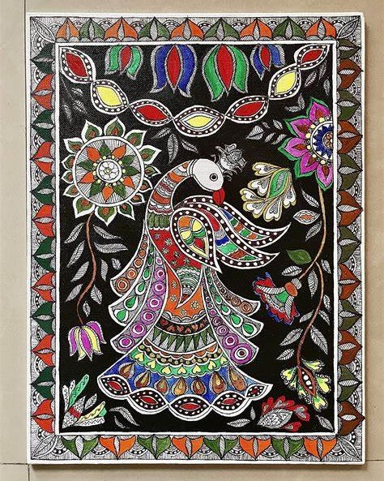

BHARATANATYAM
Bharatanatyam (Tamil: பரதநாட்டியம்) is a major form of Indian classical dance that originated in Tamil Nadu.[1][2] It is one of the eight widely recognized
See more

MADHUBANI
Mithila painting is a style of painting practiced in the Mithila region of India and Nepal. Artists create these paintings using a variety of mediums,
See more
GHOOMAR
Ghoomar or ghumar is a traditional folk dance of Rajasthan. It was the Bhil tribe who performed it to worship Goddess Saraswati which was later embraced by other Rajasthani
See more